농산물품질관리사-1차 (2016-05-28 기출문제)
1과목: 관계 법령
1. 농수산물 품질관리법의 목적(제1조)에 관한 내용으로 옳지 않은 것은?
- 농산물의 적절한 품질관리
- 농산물의 안전성 확보
- 농산물의 적정한 가격 유지
- 농업인의 소득 증대와 소비자 보호
(정답률: 77%)

2. 농수산물 품질관리법 제2조 정의에 관한 내용이다. ( )안에 들어갈 것으로 옳은 것은?
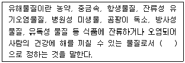
- 대통령령
- 총리령
- 농림축산식품부령
- 환경부령
(정답률: 73%)
3. 농수산물의 원산지 표시에 관한 법령상 인터넷으로 농산물을 판매할 때 원산지의 개별적인 표시방법으로 옳지 않은 것은?
- 표시 위치는 제품명 또는 가격표시 주위에 표시하거나 매체의 특성에 따라 자막 또는 별도의 창을 이용할 수 있다.
- 표시 시기는 원산지를 표시하여야 할 제품이 화면에 표시되는 시점부터 원산지를 알 수 있도록 표시해야 한다.
- 글자 크기는 제품명 또는 가격표시와 같거나 그보다 커야 한다.
- 글자색은 제품명 또는 가격표시와 다른 색으로 한다.
(정답률: 72%)
4. 농수산물의 원산지 표시에 관한 법령상 원산지 위장판매의 범위에 해당하는 것은?
- 외국산과 국내산을 진열ㆍ판매하면서 외국 국가명 표시를 잘 보이지 않게 가리거나 대상 농산물과 떨어진 위치에 표시하는 경우
- 원산지 표시란에는 외국 국가명 또는 “국내산”으로 표시하고 포장재 앞면 등 소비자가 잘 보이는 위치에는 큰 글씨로 “국내생산”, “경기특미” 등과 같이 국내 유명 특산물 생산지역명을 표시한 경우
- 게시판 등에는 “국산 김치만 사용합니다”로 일괄 표시하고 원산지 표시란에는 외국 국가명을 표시하는 경우
- 원산지 표시란에는 외국 국가명을 표시하고 인근에 설치된 현수막 등에는 “우리 농산물만 취급”, “국산만 취급”, “국내산 한우만 취급” 등의 표시ㆍ광고를 한 경우
(정답률: 65%)
5. 농수산물의 원산지 표시에 관한 법령상 원산지 표시 위반 자를 주무관청에 신고한 자에 대해 예산의 범위에서 지급할 수 있는 포상금의 범위는?(2020년 개정된 기준 적용됨)
- 최고 200만원
- 최고 300만원
- 최고 500만원
- 최고 1,000만원
(정답률: 73%)
6. 농수산물 품질관리법령상 농산물검사의 유효기간이 다른 것은? (단, 검사시행일은 10월 15일이다.)
- 마늘
- 사과
- 양파
- 단감
(정답률: 60%)
7. 농수산물 품질관리법상 농산물품질관리사의 직무가 아닌 것은?
- 농산물의 검사
- 농산물의 출하 시기 조절에 관한 조언
- 농산물의 품질관리기술에 관한 조언
- 농산물의 생산 및 수확 후 품질관리기술 지도
(정답률: 79%)
8. 농수산물 품질관리법령상 농산물우수관리에 관한 내용으로 옳은 것은?
- 농림축산식품부장관은 외국에서 수입되는 농산물에 대한 우수관리인증의 경우 외국의 기관이 농림축산식품부장관이 정한 기준을 갖추어도 우수관리인증기관으로 지정할 수 없다.
- 쌀의 우수관리인증의 유효기간은 우수관리인증을 받은 날부터 1년으로 한다.
- 농산물우수관리시설의 지정 유효기간은 3년으로 하되, 우수관리시설 지정의 효력을 유지하기 위하여는 유효기간이 끝나기 전에 그 지정을 갱신하여야 한다.
- 우수관리인증을 받은 자는 우수관리기준에 따라 생산ㆍ관리한 농산물의 포장ㆍ용기ㆍ송장ㆍ거래명세표ㆍ간판ㆍ차량 등에 우수관리인증의 표시를 할 수 있다.
(정답률: 80%)
9. 농수산물 품질관리법령상 우수관리인증 농가가 1차 위반 시 우수관리인증이 취소되는 위반행위로 묶인 것은?
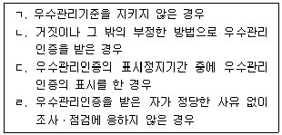
- ㄱ, ㄴ
- ㄱ, ㄹ
- ㄴ, ㄷ
- ㄷ, ㄹ
(정답률: 93%)
10. 농수산물 품질관리법상 안전성검사기관의 지정과 취소 등에 관한 내용으로 옳지 않은 것은?
- 안전성검사기관으로 지정받으려는 자는 농림축산식품부장관에게 신청하여야 한다.
- 안전성검사기관 지정이 취소된 후 2년이 지나지 아니하면 안전성검사기관 지정을 신청할 수 없다.
- 거짓이나 그 밖의 부정한 방법으로 지정을 받은 경우에는 지정을 취소하여야 한다.
- 안전성검사기관의 지정 기준 및 절차와 업무 범위 등 필요한 사항은 총리령으로 정한다.
(정답률: 39%)
11. 농수산물 품질관리법령상 단감을 출하할 때 해당 물품의 포장 겉면에 '표준규격품'이라는 문구와 함께 표시해야 하는 사항으로 묶인 것은?
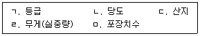
- ㄱ, ㄴ, ㄹ
- ㄱ, ㄷ, ㄹ
- ㄴ, ㄹ, ㅁ
- ㄴ, ㄷ, ㅁ
(정답률: 82%)
12. 농수산물 품질관리법령상 농산물의 생산자가 이력추적관리등록을 할 때 등록사항이 아닌 것은?
- 생산자의 성명, 주소 및 전화번호
- 생산계획량
- 수확 후 관리시설명 및 그 주소
- 이력추적관리 대상품목명
(정답률: 83%)
13. 농수산물 품질관리법령상 ( )안에 들어갈 것으로 옳은 것은?
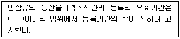
- 5년
- 6년
- 8년
- 10년
(정답률: 82%)
14. 농수산물 품질관리법상 지리적표시의 등록 절차를 순서대로 올바르게 나열한 것은?
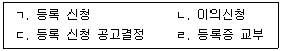
- ㄱ→ㄴ→ㄷ→ㄹ
- ㄱ→ㄷ→ㄴ→ ㄹ
- ㄷ→ㄱ→ㄴ→ㄹ
- ㄷ→ㄴ→ㄱ→ ㄹ
(정답률: 64%)
15. 농수산물 품질관리법령상 지리적표시품 표지의 제도법에 관한 설명이다. ( )안에 들어갈 내용으로 옳은 것은?
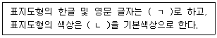
- ㄱ: 명조체 ㄴ: 녹색
- ㄱ: 명조체 ㄴ: 빨간색
- ㄱ: 고딕체 ㄴ: 녹색
- ㄱ: 고딕체 ㄴ: 빨간색
(정답률: 89%)
16. 농수산물 품질관리법상 농산물품질관리사 자격증을 다른 사람에게 빌려준 자에 대한 벌칙 기준으로 옳은 것은?
- 1년 이하의 징역 또는 5백만원 이하의 벌금
- 1년 이하의 징역 또는 1천만원 이하의 벌금
- 2년 이하의 징역 또는 2천만원 이하의 벌금
- 3년 이하의 징역 또는 3천만원 이하의 벌금
(정답률: 78%)
17. 농수산물 유통 및 가격안정에 관한 법령상 위탁수수료의 최고한도가 거래금액의 1천분의 50인 부류는?
- 청과부류
- 화훼부류
- 양곡부류
- 약용작물부류
(정답률: 73%)
18. 농수산물 유통 및 가격안정에 관한 법령상 주산지의 지정 및 해제 등에 관한 설명으로 옳지 않은 것은?
- 주산지의 지정은 읍ㆍ면ㆍ동 또는 시ㆍ군ㆍ구 단위로 한다.
- 농림축산식품부장관이 주산지를 지정할 경우 시ㆍ도지사에게 이를 통지하여야 한다.
- 시ㆍ도지사는 지정된 주산지가 지정요건에 적합하지 아니하게 되었을 때에는 그 지정을 변경하거나 해제할 수 있다.
- 시ㆍ도지사는 지정된 주산지에서 주요 농산물을 생산하는 자에 대하여 생산자금의 융자 및 기술지도 등 필요한 지원을 할 수 있다.
(정답률: 65%)
19. 농수산물 유통 및 가격안정에 관한 법령상 유통조절명령에 포함되어야 하는 사항이 아닌 것은?
- 지역
- 생산조정 또는 출하조절의 방안
- 소비억제의 의무화
- 대상 품목
(정답률: 94%)
20. 농수산물 유통 및 가격안정에 관한 법률상 ( )안에 들어갈 내용으로 옳은 것은?
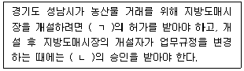
- ㄱ: 농림축산식품부장관 ㄴ: 경기도지사
- ㄱ: 경기도지사 ㄴ: 성남시장
- ㄱ: 경기도지사 ㄴ: 경기도지사
- ㄱ: 농림축산식품부장관 ㄴ: 성남시장
(정답률: 알수없음)
21. 농수산물 유통 및 가격안정에 관한 법령상 도매시장법인이 농산물을 매수하여 도매할 수 있는 경우에 해당하지 않는 것은?
- 수탁판매의 방법으로는 적정한 거래물량의 확보가 어려운 경우로서 농림축산식품부장관이 고시하는 범위에서 시장도매인의 요청으로 그 시장도매인에게 정가ㆍ수의매매로 도매하기 위하여 필요한 물량을 매수하는 경우
- 거래의 특례에 따라 다른 도매시장법인 또는 시장도매인으로부터 매수하여 도매하는 경우
- 물품의 특성상 외형을 변형하는 등 가공하여 도매하여야 하는 경우로서 도매시장 개설자가 업무규정으로 정하는 경우
- 해당 도매시장에서 주로 취급하지 아니하는 농산물의 품목을 갖추기 위하여 대상 품목과 기간을 정하여 도매시장 개설자의 승인을 받아 다른 도매시장으로부터 이를 매수하는 경우
(정답률: 40%)
22. 농수산물 유통 및 가격안정에 관한 법률상 농산물공판장에 관한 설명으로 옳지 않은 것은?
- 생산자단체와 공익법인은 법률에 따른 기준에 적합한 시설을 갖추고 시ㆍ도지사의 승인을 받아 공판장을 개설할 수 있다.
- 공판장에는 시장도매인, 중도매인, 매매참가인, 산지유통인 및 경매사를 두어야 한다.
- 농산물을 수집하여 공판장에 출하하려는 자는 공판장의 개설자에게 산지유통인으로 등록하여야 한다.
- 공판장의 경매사는 공판장의 개설자가 임면한다.
(정답률: 82%)
23. 농수산물 유통 및 가격안정에 관한 법률상 도매시장거래 분쟁조정위원회의 심의ㆍ조정사항이 아닌 것은?
- 낙찰자 결정에 관한 분쟁
- 낙찰가격에 관한 분쟁
- 거래대금의 지급에 관한 분쟁
- 위탁수수료의 결정에 관한 사항
(정답률: 72%)
24. 농수산물 유통 및 가격안정에 관한 법령상 농산물가격안정기금을 융자 또는 대출할 수있는 사업은?
- 농산물의 가격조절과 생산ㆍ출하의 장려 또는 조절
- 기금이 관리하는 유통시설의 설치ㆍ취득 및 운영
- 농산물의 가공ㆍ포장 및 저장기술의 개발
- 농산물의 유통구조 개선 및 가격안정사업과 관련된 조사
(정답률: 40%)
25. 농수산물 유통 및 가격안정에 관한 법률상 2년 이하의 징역 또는 1천만원 이하의 벌금 기준에 해당하는 행위를 한 자는?
- 허가를 받지 아니하고 중도매인의 업무를 한 자
- 등록을 하지 아니하고 산지유통인의 업무를 한 자
- 수입 추천신청을 할 때에 정한 용도 외의 용도로 수입농산물을 사용한 자
- 매매참가인의 거래 참가를 방해한 자
(정답률: 67%)
2과목: 원예작물학
26. 원예작물별 주요 기능성물질의 연결이 옳지 않은 것은?
- 감귤 – 아미그달린(amygdalin)
- 고추 – 캡사이신(capsaicin)
- 포도 – 레스베라트롤(resveratrol)
- 토마토 - 리코펜(lycopene)
(정답률: 86%)
27. 원예작물의 바이러스병에 관한 설명으로 옳지 않은 것은?
- 바이러스에 감염된 작물은 신속하게 제거한다.
- 바이러스 무병묘를 이용하여 회피할 수 있다.
- 많은 바이러스가 진딧물과 같은 곤충에 의해 전염된다.
- 대표적인 바이러스병으로 토마토의 궤양병이 있다.
(정답률: 72%)
28. 채소작물의 식물학적 분류에서 같은 과(科)끼리 묶이지 않은 것은?
- 브로콜리, 갓
- 양배추, 상추
- 감자, 가지
- 마늘, 아스파라거스
(정답률: 65%)
29. 결핍 시 딸기의 잎끝마름과 토마토의 배꼽썩음병의 원인이 되는 무기양분은?
- 질소(N)
- 인(P)
- 칼륨(K)
- 칼슘(Ca)
(정답률: 71%)
30. 채소작물 중 과실의 주요 색소가 안토시아닌(anthocyanin)인 것은?
- 토마토
- 가지
- 오이
- 호박
(정답률: 69%)
31. 채소작물별 배토(培土)의 효과로 옳지 않은 것은?
- 파의 연백(軟白)을 억제한다.
- 감자의 괴경 노출을 방지한다.
- 당근의 어깨 부위 엽록소 발생을 억제한다.
- 토란의 자구(子球) 비대를 촉진한다.
(정답률: 71%)
32. 채소작물 육묘의 목적에 관한 설명으로 옳지 않은 것은?
- 조기수확이 가능하고 수확기간을 연장하여 수량을 늘릴 수 있다.
- 묘상의 집약 관리로 어릴 때의 환경 관리, 병해충 관리가 쉽다.
- 대체로 발아율은 감소되나 본밭의 토지이용률은 높여준다.
- 묘의 생식생장 유도, 접목 등으로 본밭에서의 적응력을 향상시킬 수 있다.
(정답률: 86%)
33. 채소작물의 암수 분화에 관한 설명이다. ( )안에 들어갈 내용으로 옳은 것은?
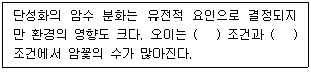
- 저온, 단일
- 저온, 장일
- 고온, 단일
- 고온, 장일
(정답률: 67%)
34. 호광성 종자의 발아에 관한 설명으로 옳지 않은 것은?
- 발아는 450nm 이하의 광파장에서 잘 된다.
- 발아는 파종 후 복토를 얇게 할수록 잘 된다.
- 광은 수분을 흡수한 종자에만 작용한다.
- 발아는 색소단백질인 피토크롬(phytochrome)이 관여한다.
(정답률: 55%)
35. 채소작물에 고온으로 인해 나타나는 현상이 아닌 것은?
- 상추는 발아가 억제된다.
- 단백질의 변성으로 효소활성이 증가한다.
- 동화물질의 소모가 크게 증가한다.
- 대사작용의 교란으로 독성물질이 체내에 축적된다.
(정답률: 58%)
36. 화훼작물의 식물학적 분류에서 과(科)가 다른 것은?
- 튤립
- 히야신스
- 백합
- 수선화
(정답률: 50%)
37. 고형 배지 없이 베드 내 배양액에 뿌리를 계속 잠기게 하여 재배하는 방법은?
- 분무경(aeroponics)
- 담액수경(deep flow technique)
- 암면재배(rockwool culture)
- 저면담배수식(ebb and flow)
(정답률: 88%)
38. 화훼작물에서 종자 또는 줄기의 생장점이 일정 기간의 저온을 겪음으로써 화아가 형성되는 현상은?
- 경화
- 춘화
- 휴면
- 동화
(정답률: 83%)
39. 화훼작물의 선단부 절간이 신장하지 못하고 짧게 되는 로제트(rosette) 현상을 타파하기 위해 사용하는 생장조절물질은?
- 옥신
- 시토키닌
- 지베렐린
- 아브시스산
(정답률: 87%)
40. 가을에 국화의 개화시기를 늦추기 위한 재배방법은?
- 전조재배
- 암막재배
- 네트재배
- 촉성재배
(정답률: 73%)
41. 장미에서 분화된 꽃눈이 꽃으로 발육하지 못하고 퇴화하는 블라인드(blind) 현상의 주요 원인이 아닌 것은?
- 일조량의 부족
- 낮은 야간 온도
- 엽수의 부족
- 질소 시비량의 과다
(정답률: 94%)
42. 원예작물에 발생하는 병 중에서 곰팡이(진균)에 의한 것이 아닌 것은?
- 잘록병
- 역병
- 탄저병
- 무름병
(정답률: 65%)
43. 화훼작물의 초장 조절을 위한 시설 내 주야간 관리 방법인 DIF가 의미하는 것은?
- 주야간 습도차
- 주야간 온도차
- 주야간 광량차
- 주야간 이산화탄소 농도차
(정답률: 93%)
44. 과수작물에서 씨방하위과(子房下位果)로 위과(僞果)이며 단과(單果)인 것은?
- 배
- 복숭아
- 감귤
- 무화과
(정답률: 65%)
45. 과수작물의 영양번식법 중에서 무병묘(virus-free stock) 생산에 적합한 방법은?
- 취목
- 접목
- 조직배양
- 삽목
(정답률: 87%)
46. 다음은 사과 과실 모양과 온도와의 관계를 설명한 내용이다. ( )에 들어갈 내용을 순서대로 나열한 것은?
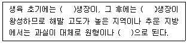
- 종축, 횡축, 편원형
- 종축, 횡축, 장원형
- 횡축, 종축, 편원형
- 횡축, 종축, 장원형
(정답률: 82%)
47. 포도 재배 시 봉지씌우기의 주요 목적이 아닌 것은?
- 과실 품질을 향상시킨다.
- 병해충으로부터 과실을 보호한다.
- 비타민 함량을 높인다.
- 농약이 과실에 직접 묻지 않도록 한다.
(정답률: 90%)
48. 배 재배 시 열매솎기(적과)의 목적이 아닌 것은?
- 과실의 당도 증진
- 해거리 방지
- 무핵 과실 생산
- 유목의 수관 확대
(정답률: 79%)
49. 과수작물에서 병원균에 의해 나타나는 병은?
- 적진병(internal bark necrosis)
- 고무병(internal breakdown)
- 고두병(bitter pit)
- 화상병(fire blight)
(정답률: 59%)
50. 사과나무에서 접목 시 대목 목질부에 홈이 파이는 증상이 나타나는 고접병의 원인이 되는 것은?
- 진균
- 세균
- 바이러스
- 파이토플라즈마
(정답률: 79%)
3과목: 수확 후 품질관리론
51. 다음 중 호흡급등형 작물을 고른 것은?
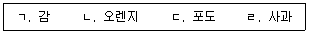
- ㄱ, ㄴ
- ㄱ, ㄹ
- ㄴ, ㄷ
- ㄷ, ㄹ
(정답률: 62%)
52. 원예작물의 수확적기에 관한 설명으로 옳은 것은?
- 저장용 마늘은 추대가 되기 전에 수확한다.
- 포도는 당도를 높이기 위해 비가 온 후 수확한다.
- 만생종 사과는 낙과를 방지하기 위해 추석 전에 수확한다.
- 감자는 잎과 줄기의 색이 누렇게 될 때부터 완전히 마르기 직전까지 수확한다.
(정답률: 50%)
53. 원예산물의 품질을 측정하는 기기가 아닌 것은?
- 경도계
- 조도계
- 산도계
- 색차계
(정답률: 86%)
54. 원예산물 저장고 관리에 관한 설명으로 옳지 않은 것은?
- 저장고 내의 고습을 유지하기 위해 과망간산칼륨 또는 활성탄을 처리한다.
- 저장고 내부를 5% 차아염소산나트륨 수용액을 이용하여 소독한다.
- CA저장고는 저장고 내부로 외부공기가 들어가지 않도록 밀폐한다.
- CA저장고는 냉각장치, 압력조절장치, 질소발생기를 구비한다.
(정답률: 74%)
55. 원예산물의 수확 후 전처리에 관한 설명으로 옳은 것은?
- 양파는 큐어링 할 때 햇빛에 노출되면 흑변이 발생한다.
- 마늘은 열풍건조할 때 온도를 60~70℃로 유지하여 내부성분이 변하지 않도록 한다.
- 감자는 온도 15℃, 습도 90~95%에서 큐어링한다.
- 고구마는 큐어링 한 후 품온을 0~5℃로 낮추어야 한다.
(정답률: 80%)
56. 원예산물의 장해에 관한 설명으로 옳지 않은 것은?
- 장미는 수확 직후 물에 꽂아 꽃목굽음을 방지한다.
- 포도는 저온저장 중 유관속 조직 주변이 투명해지는 밀증상이 나타난다.
- 가지, 호박, 오이는 저온저장 중 과실의 표면이 함몰되는 수침현상이 나타난다.
- 금어초는 줄기를 수직으로 세워 물올림하여 줄기굽음을 방지한다.
(정답률: 94%)
57. 원예산물 포장상자에 관한 설명으로 옳지 않은 것은?
- 상품성 향상 및 정보제공의 기능이 있다.
- 충격으로부터 내용물을 보호하여야 한다.
- 저온고습에 견딜 수 있어야 한다.
- 모든 품목의 포장상자 규격은 동일하다.
(정답률: 94%)
58. 원예산물의 저장 중 수분손실에 관한 설명으로 옳은 것은?
- 과실은 화훼류와 혼합 저장하면 수분손실이 적다.
- 저온 및 MA 저장하면 수분손실이 적다.
- 냉기의 대류속도가 빠르면 수분손실이 적다.
- 부피에 비하여 표면적이 넓은 작물일수록 수분손실이 적다.
(정답률: 80%)
59. 딸기와 포도의 주요 유기산을 순서대로 나열한 것은?
- 구연산, 주석산
- 사과산, 옥살산
- 주석산, 구연산
- 옥살산, 사과산
(정답률: 79%)
60. 다음 원예산물에서 에틸렌에 의해 나타나는 증상이 아닌 것은?
- 결구상추의 중륵반점
- 브로콜리의 황화
- 카네이션의 꽃잎말림
- 복숭아의 과육섬유질화
(정답률: 87%)
61. 굴절당도계에 관한 설명으로 옳은 것을 모두 고른 것은?
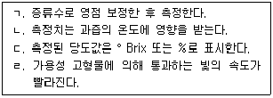
- ㄱ, ㄷ
- ㄴ, ㄷ
- ㄱ, ㄴ, ㄷ
- ㄱ, ㄴ, ㄷ, ㄹ
(정답률: 64%)
62. 다음 중 원예작물의 비파괴적 품질평가에 이용되지 않은 것은?
- NIR
- MRI
- HPLC
- X-ray
(정답률: 67%)
63. 원예산물의 성숙기 판단 지표가 아닌 것은?
- 적산온도
- 개화 후 일수
- 성분의 변화
- 대기조성비
(정답률: 88%)
64. 원예산물의 에틸렌 발생 촉진 물질은?
- AVG
- ACC
- STS
- AOA
(정답률: 77%)
65. 에틸렌에 관한 설명으로 옳지 않은 것은?
- 수용체는 세포벽에 존재한다.
- 코발트 이온에 의해 생성이 억제 된다.
- 무색이며 상온에서 공기보다 가볍다.
- 식물의 방어기작과 관련이 있다.
(정답률: 60%)
66. 원예산물의 저장에 관한 설명으로 옳은 것은?
- 선박에 의한 장거리 수송 시 CA저장은 불가능하다.
- MA포장 시 필름의 이산화탄소 투과도는 산소 투과도 보다 낮아야 한다.
- 소석회는 주로 저장고 내 산소를 제거하는데 이용된다.
- CA저장 시 드라이아이스를 이용하여 이산화탄소 농도를 증가시킬 수 있다.
(정답률: 63%)
67. 저장고 습도관리에 관한 설명으로 옳지 않은 것은?
- 과실 저장 시 상대습도는 85~95%로 유지하는 것이 좋다.
- 저장고 내 상대습도의 상승은 원예산물의 증산을 촉진시킨다.
- 저장고의 습도를 유지하기 위해 바닥에 물을 뿌리거나 가습기를 이용한다.
- 상대습도가 100%가 되면 수분응결 등에 의해 곰팡이 번식이 일어나기 쉽다.
(정답률: 77%)
68. 원예산물의 온도장해에 관한 설명으로 옳지 않은 것은?
- 배에서 환원당은 빙점을 높일 수 있다.
- 사과에서 칼슘이온은 세포내 결빙을 억제시킬 수 있다.
- 토마토에서 열처리는 냉해발생을 억제시킬 수 있다.
- 고추에서 CA저장은 냉해발생을 억제시킬 수 있다.
(정답률: 50%)
69. 신선편이 농산물 가공에 관한 설명으로 옳지 않은 것은?
- 가공처리에 의해 호흡량이 증가하므로 가공 전 예냉처리가 선행되어야 한다.
- 화학제 살균을 대체하는 기술로 자외선 살균방법이 가능하다.
- 오존수는 환원력과 잔류성이 높아 세척제로 부적합하다.
- 원료 농산물의 품질에 따라 가공 후 유통기간이 영향을 받는다.
(정답률: 93%)
70. 원예산물의 수확 후 처리기술인 예냉의 목적이 아닌 것은?
- 호흡 감소
- 과실의 조기후숙
- 포장열 제거
- 엽록소분해 억제
(정답률: 93%)
71. 원예산물의 외부포장용 골판지의 품질기준이 아닌 것은?
- 인장강도
- 압축강도
- 발수도
- 파열강도
(정답률: 91%)
72. 다음 중 수확 후 관리기술에 관한 설명으로 옳지 않은 것은?
- 과실류는 엽채류에 비해 표면적 비율이 높아 진공예냉한다.
- 배는 예건을 통해 과피흑변을 억제할 수 있다.
- 저장온도가 낮을수록 미생물 증식이 낮다.
- 배는 사과에 비해 왁스층 발달이 적어 수분손실에 유의해야 한다.
(정답률: 60%)
73. 생리적 성숙 완료기에 수확하여 이용하는 작물은?
- 오이, 가지
- 가지, 딸기
- 딸기, 단감
- 단감, 오이
(정답률: 50%)
74. 사과의 수확기 판정을 위한 요오드 반응 검사에 관한 설명으로 옳은 것은?
- 100% 요오드 용액을 과육부위에 반응시켜 착색되는 정도를 기준으로 한다.
- 성숙 중 유기산과 환원당이 감소하는 원리를 이용한다.
- 성숙될수록 요오드반응 착색면적이 넓어진다.
- 적숙기의 요오드반응 착색면적은 '쓰가루'가 '후지'에 비해 넓다.
(정답률: 47%)
75. Hunter 'a' 값이 -20일 때 측정된 부위의 과색은?
- 적색
- 황색
- 녹색
- 흑색
(정답률: 87%)
4과목: 농산물유통론
76. 농산물의 일반적인 특성으로 옳지 않은 것은?
- 단위가치에 비해 부피가 크고 무겁다.
- 가격 변동에 대한 공급 반응에 물리적 시차가 존재한다.
- 가격은 계절적 특성을 지닌다.
- 다품목 소량 생산으로 상품화가 유리하다.
(정답률: 100%)
77. 다음 사례에서 창출되는 유통의 효용으로 모두 옳은 것은?
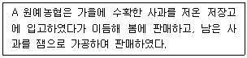
- 시간효용, 형태효용
- 시간효용, 소유효용
- 장소효용,형태효용
- 장소효용,소유효용
(정답률: 84%)
78. 다음 설명에 해당하는 것은?
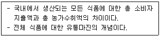
- 농가 몫
- 농가 교역조건
- 한계 수입
- 식품 마케팅빌
(정답률: 50%)
79. 농업협동조합 유통의 기대효과로 옳지 않은 것은?
- 거래교섭력 강화
- 규모의 경제 실현
- 농산물 단위당 거래비용 증가
- 유통 및 가공업체에 대한 견제 강화
(정답률: 100%)
80. 농산물 선물거래에 관한 설명으로 옳은 것은?
- 대부분의 선물계약이 실물 인수 또는 인도를 통해 최종 결제된다.
- 매매당사자간의 직접적인 대면 계약으로 이루어진다.
- 해당 품목의 가격변동성이 낮을수록 거래가 활성화된다.
- 베이시스(basis)의 변동이 없을 경우 완전 헤지(perfect hedge)가 가능하다.
(정답률: 알수없음)
81. 소매상이 이전 유통단계의 주체를 위해 수행하는 기능을 모두 고른 것은?
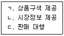
- ㄱ, ㄴ
- ㄱ, ㄷ
- ㄴ, ㄷ
- ㄱ, ㄴ, ㄷ
(정답률: 75%)
82. 농산물 소매유통에 관한 설명으로 옳지 않은 것은?
- 농산물의 수집 기능을 담당한다.
- 카테고리 킬러(category killer)가 포함된다.
- 대형유통업체의 비중이 높아지고 있다.
- 점포 없이 농산물을 거래하는 경우도 있다.
(정답률: 72%)
83. 농산물 종합유통센터의 기능을 모두 고른 것은?
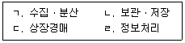
- ㄱ
- ㄴ, ㄷ
- ㄷ, ㄹ
- ㄱ, ㄴ, ㄹ
(정답률: 77%)
84. 밭떼기 거래에 관한 설명으로 옳지 않은 것은?
- 선도거래에 해당된다.
- 정전매매라고도 불린다.
- 무, 배추 등에서 많이 이루어진다.
- 농가의 수확 전 필요 자금 확보에 도움을 준다.
(정답률: 73%)
85. 대형유통업체의 농산물 직거래 확대에 대한 산지유통전문조직의 대응방안으로 옳지 않은 것은?
- 농가를 조직화, 규모화 한다.
- 고품질 농산물의 연중공급체계를 구축한다.
- 대형유통업체 간의 경쟁을 유도하기 위해 도매시장 출하를 확대한다.
- 농산물산지유통센터(APC)를 활용하여 상품화 기능을 강화한다.
(정답률: 87%)
86. 농산물 수송수단 중 선박의 특성으로 옳지 않은 것은?
- 문전연결성이 취약하다.
- 신속성이 상대적으로 떨어진다.
- 단거리 수송에 유리하다.
- 대량 운송에 적합하다.
(정답률: 95%)
87. 농산물 물적 유통기능으로 옳은 것은?
- 포장(packing)
- 시장정보
- 표준화 및 등급화
- 위험부담
(정답률: 100%)
88. 농산물 유통금융기능이 아닌 것은?
- 도매시장법인의 출하대금 정산
- 자동선별 시설 자금의 융자
- 농작물 재해 보험 제공
- 중도매인의 외상판매
(정답률: 72%)
89. 농산물 표준규격화에 관한 설명으로 옳지 않은 것은?
- 견본거래나 전자상거래가 활성화된다.
- 유통정보가 보다 신속하고 정확하게 전달된다.
- 품질에 따른 공정한 가격이 형성되어 거래가 촉진된다.
- 농산물 유통의 물류비용이 증가한다.
(정답률: 100%)
90. 단위화물적재시스템(ULS)에 관한 설명으로 옳은 것을 모두 고른 것은?
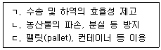
- ㄱ, ㄴ
- ㄱ, ㄷ
- ㄴ, ㄷ
- ㄱ, ㄴ, ㄷ
(정답률: 100%)
91. 농산물 가격전략의 일환으로 수요의 가격탄력성이 -0.25인 품목을 할인하여 판매한다면 총수익은 어떻게 변화하는가?
- 가격 하락에 비해 판매량이 더 증가하기 때문에 총수익은 늘어난다.
- 가격 하락에 비해 판매량이 덜 증가하기 때문에 총수익은 줄어든다.
- 가격 하락과 판매량 증가분이 동일하여 총수익은 변화가 없다.
- 수요가 비탄력적이기 때문에 총수익은 가격 하락과 무관하다.
(정답률: 75%)
92. 완전경쟁시장에 관한 설명으로 옳은 것은?
- 다수의 생산자와 소비자가 존재하며 가격 결정은 생산자가 한다.
- 다양한 품질의 상품이 서로 경쟁한다.
- 시장에 대한 진입은 자유롭지만 탈퇴는 어렵다.
- 시장참여자들이 완전한 정보를 획득할 수 있어야 한다.
(정답률: 50%)
93. 농산물 가격이 폭등하는 경우 정부가 시행하는 정책수단으로 옳은 것을 모두 고른 것은?
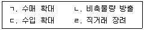
- ㄱ, ㄴ
- ㄱ, ㄹ
- ㄴ, ㄷ, ㄹ
- ㄱ, ㄴ, ㄷ, ㄹ
(정답률: 77%)
94. 기업의 강점과 약점을 파악하고, 기회와 위기 요인을 감안하여 마케팅 환경을 분석하는 방법은?
- SWOT 분석
- BC 분석
- 요인 분석
- STP 분석
(정답률: 94%)
95. 다음 사례에서 ㉠과 ㉡에 대한 설명으로 옳지 않은 것은?
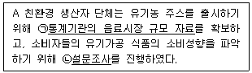
- ㉠은 1차 자료에 해당한다.
- ㉠은 문헌조사방법을 활용할 수 있다.
- ㉡에서 리커트 척도를 적용할 수 있다.
- ㉡의 경우 주관식보다 객관식 문항에 대한 응답률이 높다.
(정답률: 79%)
96. 마케팅 믹스(4P)의 요소가 아닌 것은?
- 상품(product)
- 생산(production)
- 장소(place)
- 촉진(promotion)
(정답률: 75%)
97. 농산물 브랜드(brand)에 관한 설명으로 옳지 않은 것은?
- 브랜드 마크, 등록상표, 트레이드 마크 등이 해당된다.
- 성공적인 브랜드는 소비자의 브랜드 충성도가 높다.
- 프라이빗 브랜드(PB)는 제조업자 브랜드이다.
- 경쟁상품과의 차별화 등을 위해 사용한다.
(정답률: 88%)
98. 배추, 계란 등을 미끼상품으로 제공하여 고객의 점포 방문을 유인하는 가격전략은?
- 단수가격전략
- 리더가격전략
- 개수가격전략
- 관습가격전략
(정답률: 71%)
99. 다음 문구를 포괄하는 광고의 형태로 옳은 것은?
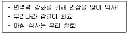
- 기초광고(generic advertising)
- 대량광고(mass advertising)
- 상표광고(brand advertising)
- 간접광고(PPL)
(정답률: 94%)
100. 농산물 유통과정에서 부가가치 창출에 관련되는 일련의 활동, 기능 및 과정의 연계를 의미하는 것은?
- 물류체인(logistics chain)
- 밸류체인(value chain)
- 공급체인(supply chain)
- 콜드체인(cold chain)
(정답률: 100%)